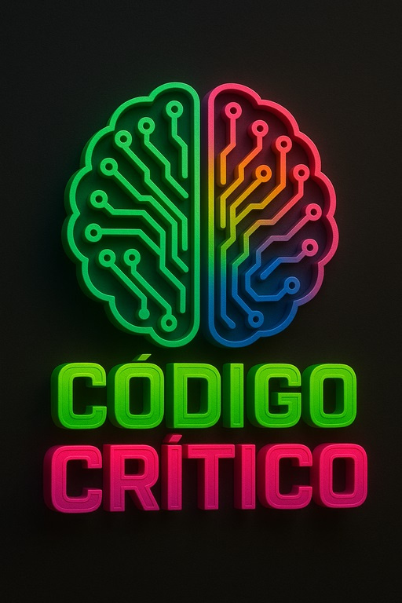

Problema de las N-Reinas
Tamaño del Tablero (N):
Datos de la Consigna:
Valor N planteado:
8
Arreglo de índices (Resultado):
[ ]
MAPEO LOGICO (MECANISMO D.O.S.)
Cargando sistema operativo... Presione "Pulsar Reloj" para calcular la matriz.
00:00.0
Pulsar Reloj
DETENIDO
Reset
Desarrollado por Código Crítico, Tercer Semestre - 2026